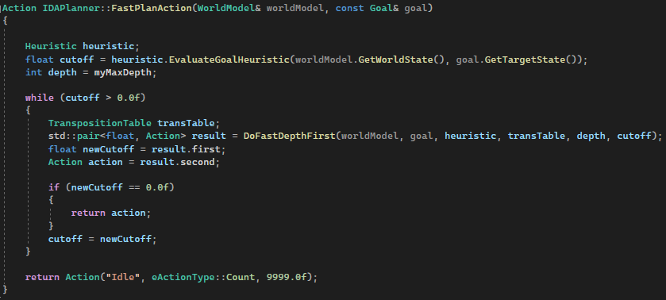
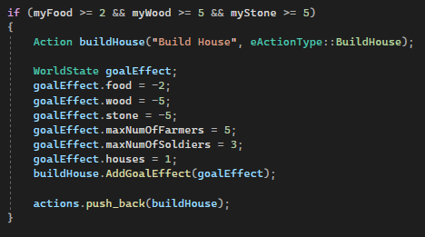
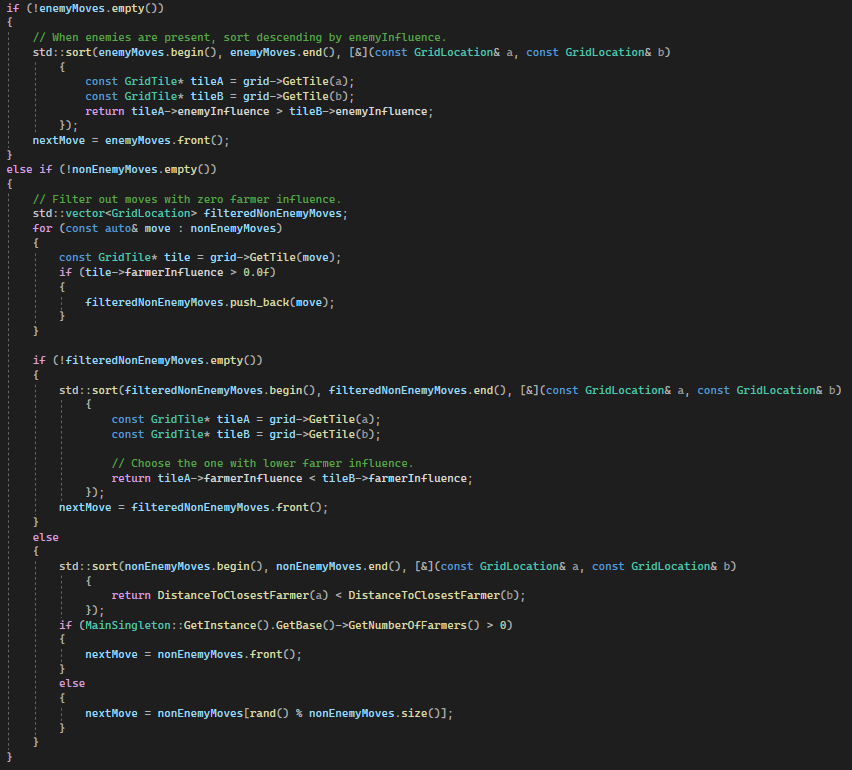
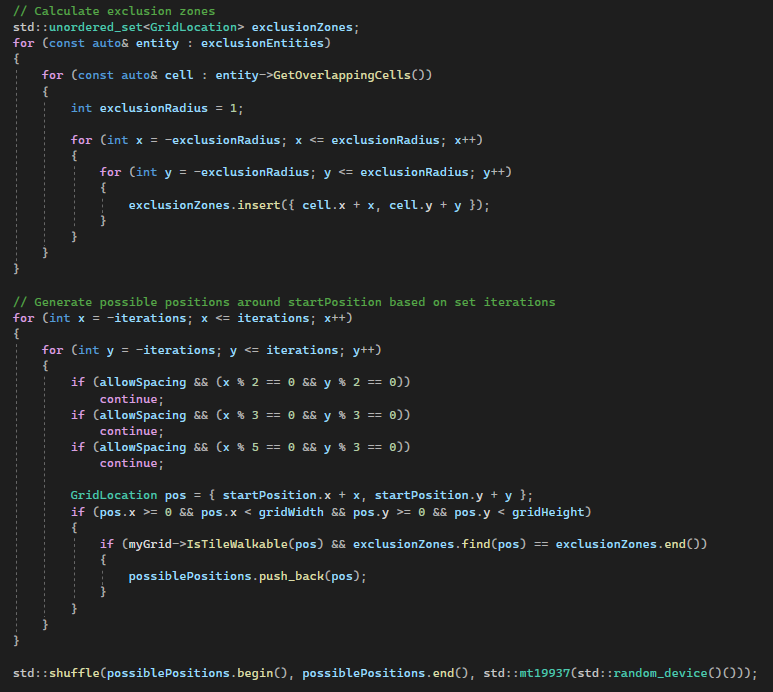

RTS-style AI using Goal-Oriented Action Planner
Longer Real-Time Simulation
Planning the Best Action
The FastPlanAction function is the entry point of the AI’s action planning. It takes in the current WorldModel and a Goal, then estimates the cost to reach the goal using a heuristic. Based on this estimate, it searches for the most efficient action by calling DoFastDepthFirst, which explores possible action sequences up to a defined depth. If a valid plan is found within the cost limit, it returns the best action. If not, it defaults to an idle action.
To keep this planner running every frame or very often, the depth has to be quite shallow.
Inputs:
World Model: The current state of the world,
including resources, units, etc.
Goal: The desired end state the AI is trying to
reach.
Transposition Table: A hash storage for already
visited states.
Heuristic: A cost calculating class.
Cutoff: Current estimated cost to goal.
Output:
The most optimal Action to take next based on current conditions and the goal.
Action example:
Heuristic-Guided Action Search
DoFastDepthFirst performs a depth-limited search through possible actions, guided by a heuristic. At each depth level, it evaluates available actions, simulates the results, and calculates the cost to reach the goal. Actions that exceed the given cutoff are ignored to keep the plan efficient. A transposition table is used to skip already visited states, preventing redundant checks. The function returns the best alternative cost and the first action in the most promising sequence.
Purpose:
- Explore action sequences up to a max depth.
- Simulate outcomes, prune expensive paths early.
- Return the most cost-effective action toward the goal.
Influence / Heat Map
Soldiers, Farmers, and Goblins emit influence on the grid around them. This influence spreads out in a radius with a decay rate, forming a dynamic heat map that represents presence. The influence map is used to guide movement and behavior:
- Farmers avoid enemy influence while gathering resources.
- Soldiers move toward areas with high enemy influence to engage or defend. If no enemy influence is nearby, they prefer tiles with the lowest farmer influence, effectively patrolling vulnerable zones. If no farmer influence exists either, they move toward the nearest farmer.
- Goblins move randomly but avoid soldier influence and prefer tiles with high farmer presence, giving them unpredictable but purposeful movement.

Movement Decisions Example: Soldier
This function determines how soldiers choose their next move using the influence map. Other soldier-occupied tiles are filtered out first.
- 1. If enemies are nearby, the soldier sorts possible moves by enemy influence, preferring the tile with the highest threat to engage.
- 2. If no enemies are nearby, it looks for tiles with some farmer influence, then picks the one with the lowest farmer presence. This creates a border-patrol behavior, guarding less protected areas.
- 3. If there’s no farmer influence at all, it moves toward the closest farmer to stay near important units.
- Fallback: If no farmers exist, it picks a random valid move.
This creates a movement pattern where soldiers act defensively, prioritize threats, and naturally position themselves to protect the perimeter of farmer positions while avoiding collisions with other soldiers.
Terrain Example: Sheep Generation
This code generates the positions of terrain entities throughout the map while avoiding overlapping from previously positioned entities. This specific example is for sheep.
Mark Exclusion Zones:
It loops through nearby entities and marks a grid radius around each one where sheep should not be placed.
Generate Possible Positions:
It checks tiles around a start position within a set range (iterations), skipping some based on spacing rules (every 2nd, 3rd, or 5th tile) to control density.
Filter Valid Tiles:
It ensures each position is inside map bounds, is walkable, and not inside an exclusion zone.
Shuffle the Results:
All valid positions are randomly shuffled to allow for non-patterned, natural placement.
